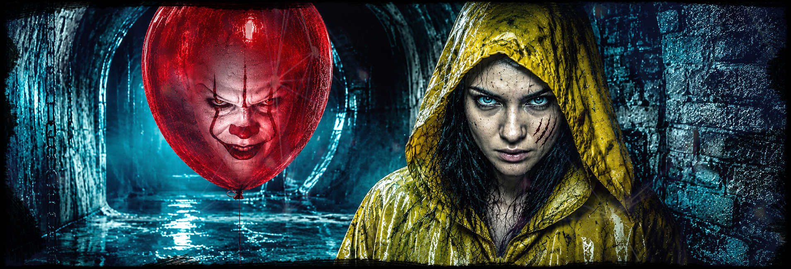
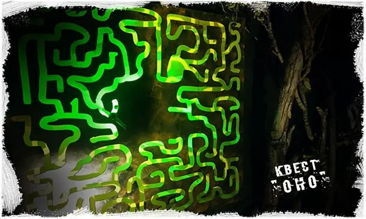
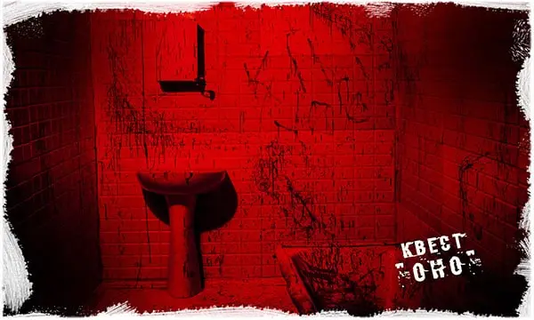
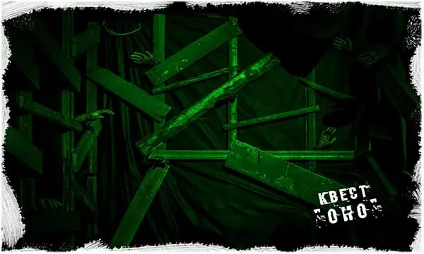
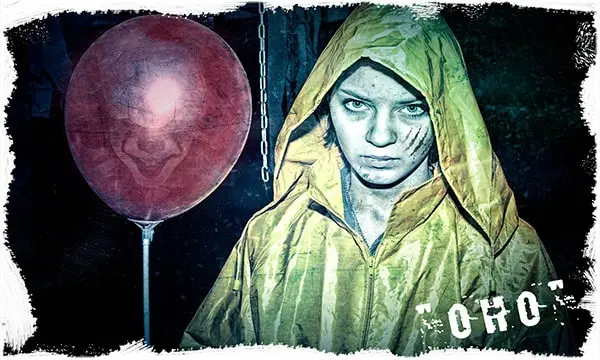

От 1500 руб./чел. Итог зависит от даты, состава команды и дополнительных услуг.

Иркутск, ул. Баррикад, 33
Оно
Пеннивайз снова зовет команду в темный город Дерри. В Иркутске квест проходит на ул. Баррикад, 33: пугающие комнаты, актер, спецэффекты и испытания, где важно держаться вместе.
12+
4-20 игроков
1 час
с актером
от 1500 руб./чел.
Что происходит в квесте
Оно - страшный сценарий по мотивам истории о Пеннивайзе. Команда попадает в место, где исчезновения, темные коридоры и странные знаки складываются в одну пугающую цепочку.
Игрокам нужно искать подсказки, проходить комнаты, реагировать на внезапные появления актера и не терять контакт с командой. Атмосфера строится на тревоге, звуке, свете и ожидании следующей сцены.
Уровень страха можно заранее обсудить: для новичков сценарий проводят мягче, а для опытной компании можно добавить больше напряжения и контактности.
Главные особенности
- актер в образе хоррор-персонажа;
- декорации, темные комнаты и тревожная атмосфера;
- спецэффекты, звук, свет и неожиданные сцены;
- подходит для компании друзей, подростков и дня рождения;
- можно добавить чайную зону после прохождения.
Запишись на игру
Выберите дату и свободное время. При бронировании укажите количество игроков, возраст команды и желаемый уровень страха.
Цены и условия
Коротко о том, что обычно спрашивают перед бронированием: цена, возраст, игроки, длительность, адрес, чайная зона, актер и уровень страха.
Рекомендуемый возраст - 12+. Для подростков можно настроить мягкий уровень страха.
Обычно 4-20 человек. Для большой компании лучше уточнить формат заранее.
Игра длится около 1 часа. После прохождения можно добавить чайную зону.
Иркутск, ул. Баррикад, 33.
Подходит для дня рождения, встречи друзей или продолжения праздника после игры.
Сценарий проходит с актером, пугающими появлениями и напряженными сценами.
Интенсивность, контактность, громкость и свет можно согласовать до старта.
Кому подойдет Оно
Хороший выбор, если вы хотите
- популярный страшный квест с актером;
- хоррор для компании друзей или дня рождения;
- сценарий, который легко объяснить подросткам и взрослым;
- напряжение, но с возможностью настроить уровень страха.
Оно часто выбирают как первый хоррор-квест: персонаж узнаваемый, формат понятный, а уровень страха можно адаптировать под команду.
Для дня рождения сценарий удобно совместить с чайной зоной. Команда проходит квест, потом обсуждает самые яркие моменты и продолжает праздник уже без спешки.
Атмосфера квеста
Фотографии и карточки сценария помогают заранее почувствовать настроение Оно без раскрытия ключевых моментов.




Схема проезда
Квест Оно в Иркутске проходит на ул. Баррикад, 33. Ниже - карта площадки, чтобы заранее понять, куда ехать.
Иркутск
ул. Баррикад, 33
Площадка IQuest для квеста Оно: удобно для компании друзей, подростков и дня рождения.
Открыть в Яндекс КартахВидео с игры
Короткий ролик без спойлеров и ключевых моментов: только атмосфера, реакции команды и ощущение страшного квеста.
Оно в Иркутске на ул. Баррикад, 33
В Иркутске квест Оно проходит на площадке IQuest по адресу ул. Баррикад, 33. Это хоррор-сценарий с актером для подростков 12+, взрослых компаний и дня рождения.
Перед бронированием лучше назвать дату, возраст игроков и желаемый уровень страха. Так проще подобрать свободное время и комфортную контактность для команды.
После прохождения можно обсудить чайную зону для дня рождения или компании друзей.
Локальная информация
- Адрес: Иркутск, ул. Баррикад, 33.
- Телефон для уточнения времени: 8 (901) 666-888-1.
- Рекомендуемый возраст - 12+.
- Уровень страха, контактность и ограничения обсуждаются до старта.
- Можно добавить чайную зону после прохождения.
Оно или другой хоррор-квест
Если вы выбираете между страшными сценариями, сравните формат по городу, актерам, уровню страха и адресу.
| Квест | Город | Актеры | Страх | Адрес |
|---|---|---|---|---|
| Оно | Иркутск | да | популярный хоррор | ул. Баррикад, 33 |
| Экзорцизм | Иркутск | актерские элементы | мистика | уточнить при бронировании |
Кому Оно может не подойти
Лучше предупредить заранее
- если игроку нельзя сильный стресс, темноту или внезапные появления;
- если в команде есть дети младше рекомендованного возраста;
- если нужен полностью неконтактный формат без актерских сцен;
- если есть медицинские ограничения, беременность или выраженная тревожность.
Оно - хоррор-квест с актером, поэтому важно заранее обозначить ограничения команды. Если игроки впервые идут на страшный сценарий, можно выбрать более мягкий режим.
Если нужен праздник без сильного напряжения, лучше рассмотреть детские и семейные форматы, лазертаг, NERF или приключенческие квесты без хоррора.
Что обычно отмечают игроки
Игроки чаще всего запоминают именно моменты, когда персонаж появляется рядом и меняет темп игры.
Свет, звук и декорации помогают быстро погрузиться в историю без длинных объяснений.
Оно подходит для дня рождения, вечерней встречи друзей и первого знакомства с хоррор-квестами.
Частые вопросы
С какого возраста можно на Оно?
Рекомендуемый возраст - 12+. Для подростков можно заранее обсудить мягкий уровень страха.
Сколько длится игра?
Основная игра длится около 1 часа. После прохождения можно добавить чайную зону.
Можно ли пройти квест на день рождения?
Да. Оно часто выбирают для дня рождения, потому что сценарий понятный, атмосферный и подходит для компании.
Где проходит квест Оно в Иркутске?
Квест Оно в Иркутске проходит на площадке IQuest по адресу ул. Баррикад, 33.
Выбрать время для квеста Оно
Позвоните или оставьте бронь на сайте: администратор подскажет свободное время на ул. Баррикад, 33 и подходящий уровень страха для вашей команды.
Позвонить 8 (901) 666-888-1